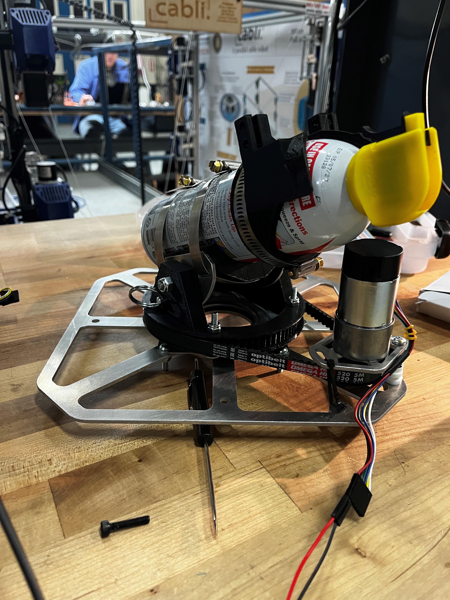
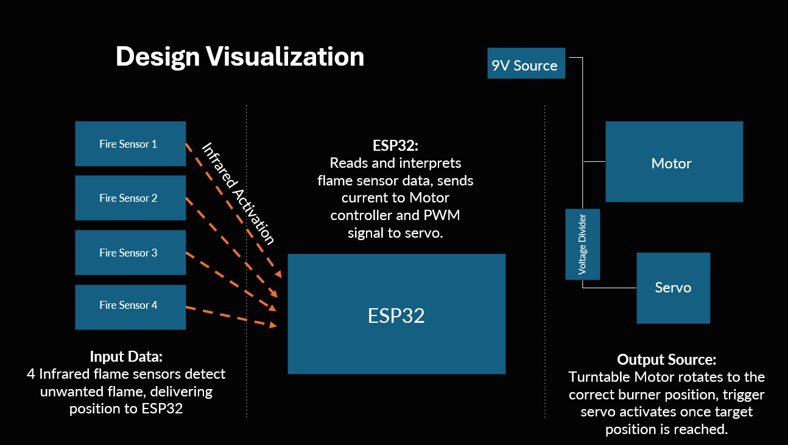
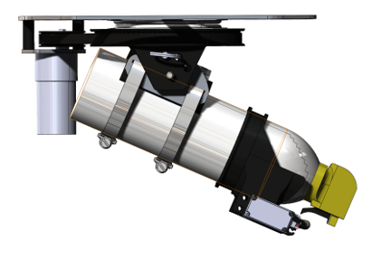
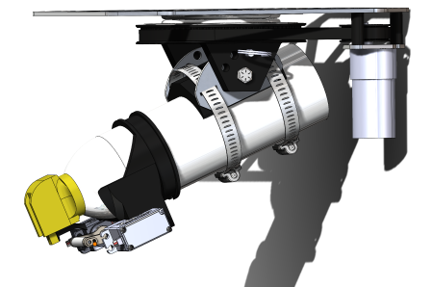
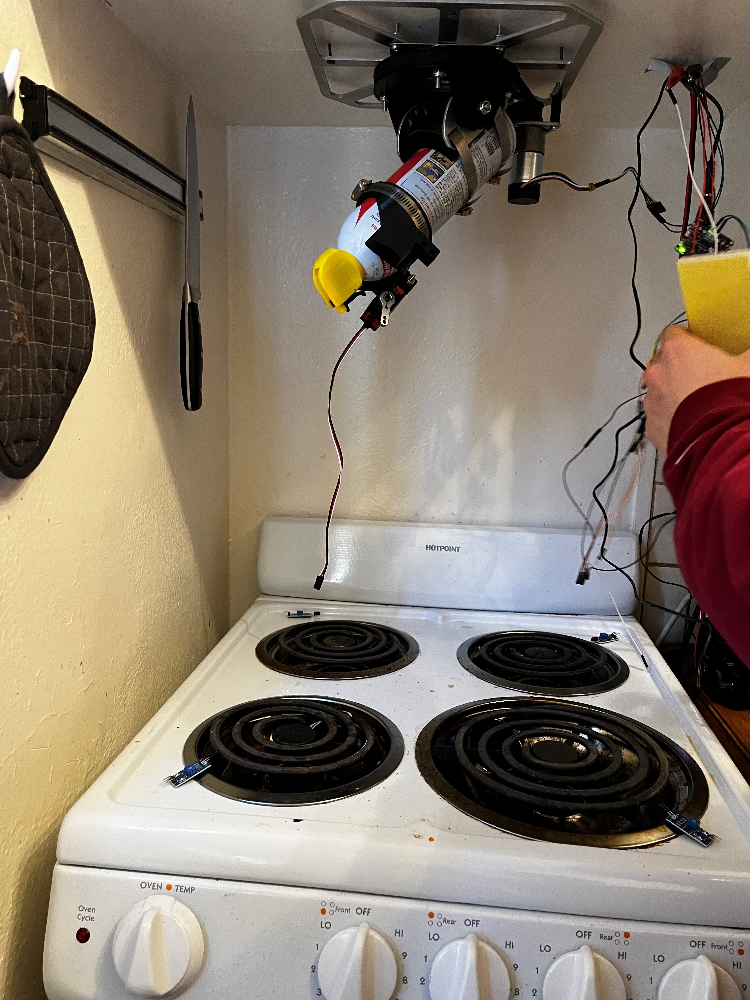
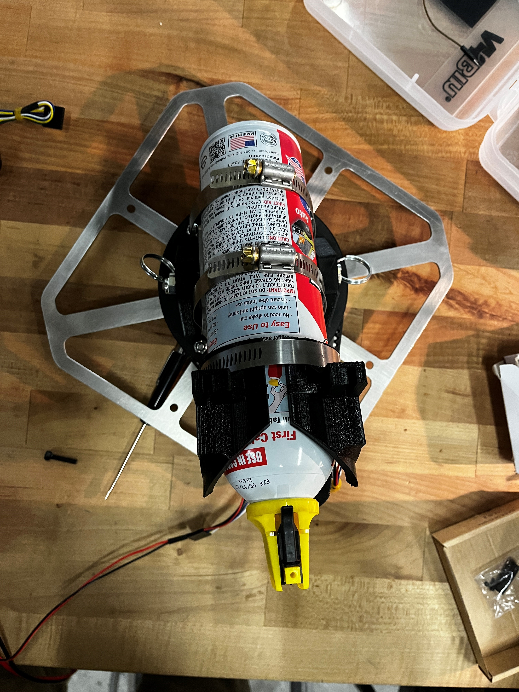

Fire Suppression System
'Internet of Things' Final Project
Project Overview
ME 100 (Electronics for the Internet of Things) is one of the many Mechanical Engineering upper division classes that caught my attention at Berkeley. The class taught students how to combine their knowledge of Mechanical Engineering with IoT and EE capabilities, allowing for actuation and smart products. The material in the class was very interesting, and this combined with the weekly labs in MicroPython + ESP32 microcontrollers made it a worthwhile class. More importantly, ME 100 has a large final project, meant to be worked on for the second half of the semester. Besides a few basic requirements (such as at least 1 sensor, at least 1 actuation etc), the project and its scope was completely up to students.
My partner and I wanted to pursue an ambitious but still interesting project. We started our initial brainstorming and ended up choosing the idea that we completed the class with. This was the "Automatic Fire Suppression System," a smart device that would be able to detect fires and spray them with flame retardant. Using KY-026 sensors, an ESP32 for control, and multiple methods of actuation, we were able to complete our first prototype and automatically put out a lighter flame!
Image Gallery

Design Overview
As seen in the design visualization below, the project consisted of inputs that would trigger some response from the system. In this case, we would receive an input from one of the 4 flame sensors (KY-026 Sensors), which could detect wavelengths that fires emit, and outputs a HIGH or LOW signal based on its reading. We then used a DC motor, calculating the need for an 18:80 ratio to achieve the torque needed to spin the flame retardant spray to the correct quadrant. By placing bearings all around our main pulley, we were able to both constrain the container and reduce the friction the heavy system would have when turning. After determining that the flame retardant was aimed at the correct spray, we actuated our servo to trigger the spray, shooting at the fire until no more flame was detected. To meet the IoT requirements, we then configured a server to send data over through MQTT protocols, to display on a user's phone whenever a flame was detected, and when it was put out.



Midterm Presentation
At the beginning of our project, we presented a midterm presentation of our ideas and how we would achieve the specified requirements for the project.
Final Presentation
After a lot of hours programming, building and testing, we created a final presentation to best showcase all of our work. This was the culmination of our grade this semester, and for this project me and partner both received a 100!
Conclusion/Next Steps
This project was a great way to combine all the concepts we learned about throughout the semester, and see it in a tangible result. It was interesting working this project along with all other deadlines we have in a semester, but as long as time is managed properly, anything would be possible. In terms of next steps, I would love to continue refining this project, especially new parts that we did not have time for in the semester. For example, I started work on an unimplemented wiggle feature, to basically continuously spray and change angle/position to take on larger flames. Another possible improvement would be a way to track how much of the flame retardant is left, based on amount of time/number of uses previously. These combined with the existing system allows for an efficient fire suppression system that I was able to learn a lot from!
Screenshots / Media

